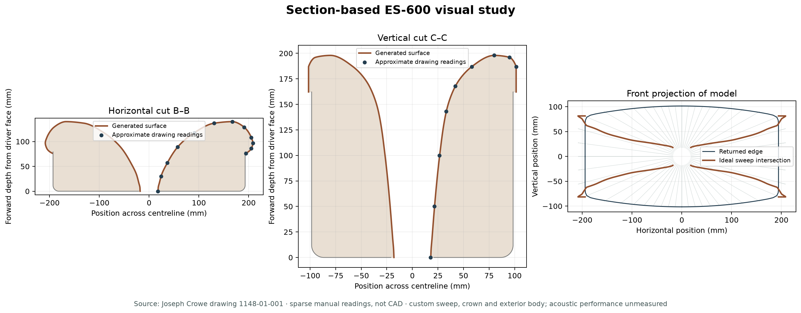

Visual reconstruction · approximate
01Section-based ES-600 study
417 × 203 × 201full bounding box · mm
3,197quarter-mesh nodes / seed DOFs
Approximatevisual reconstruction
Four rectangular, rolled-mouth horn studies: an approximate Crowe panel reconstruction alongside three original surfaces exploring four-wall relief.
Geometry study · acoustic performance unmeasuredChoose an angle to update all four main views. Select any image to enlarge it; the five smaller views remain available for each variant.
Separate horizontal and vertical reference readings anchor this approximation. The earlier shared-profile scaling could not reproduce their different flare and return shapes.

The three original surfaces use a shrinking-curvature contour, independently shaped horizontal and vertical profiles, and a transition from a round throat to superellipse sections. Horizontal profile depth is 0.68 of vertical profile depth. The pucker figures are input amplitudes, not measured centre-to-diagonal relief.
The common design brief specifies a 36 mm circular throat and a target of 80° horizontal × 50° vertical coverage. These are design inputs, not demonstrated acoustic coverage. Bounding dimensions and quarter-mesh node counts are derived from the supplied meshes; the displayed render may show fine bands from the coarse screen mesh, not a finished tooling surface.
The geometry draws visual inspiration from Joseph Crowe's rolled-mouth horns and takes a separate idea from ATH's four-wall forms. The section-based study uses separately digitized horizontal and vertical cuts. Its swept-wall transition, crown and exterior body are custom reconstructions; the exact Crowe ES equation and original CAD are not reproduced. The other three are original constructions, not reproductions of Crowe ES or ATH Tritonia. Acoustic validation is tracked separately; no performance or ranking is implied by these renders.